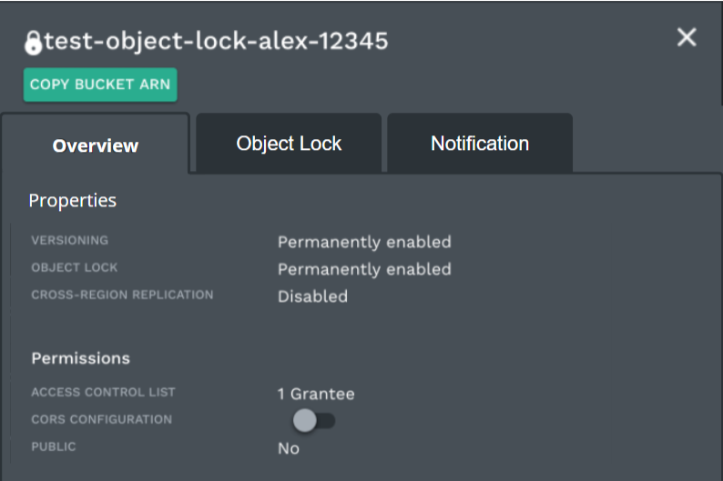
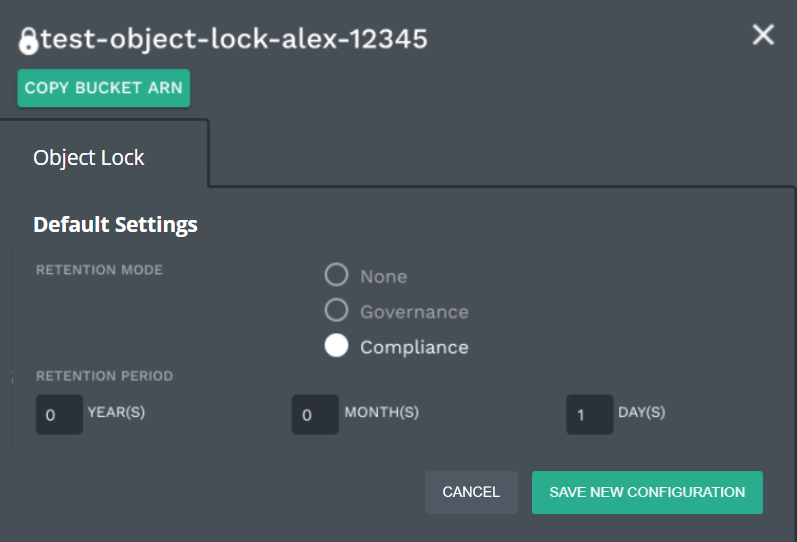
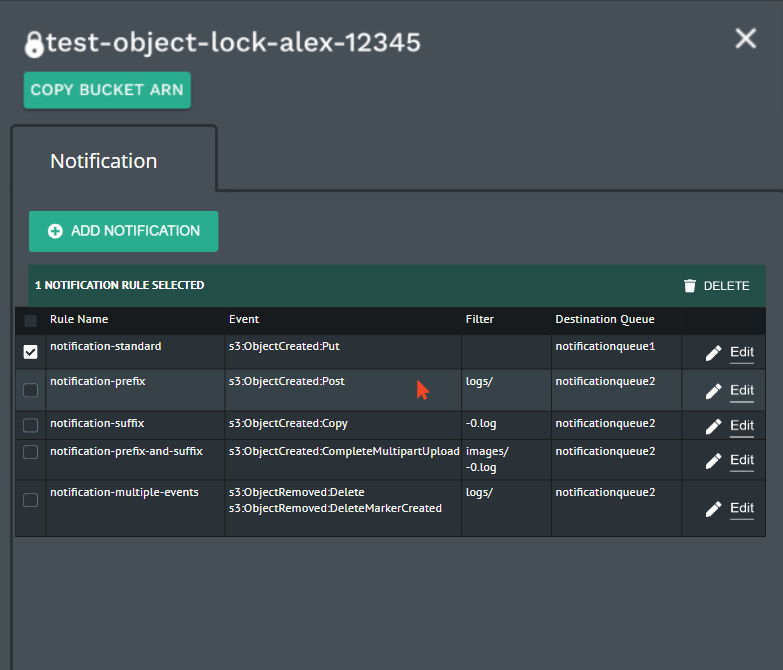
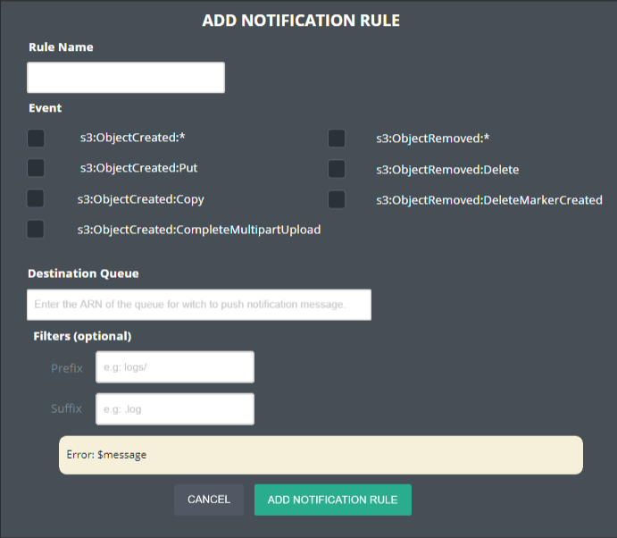
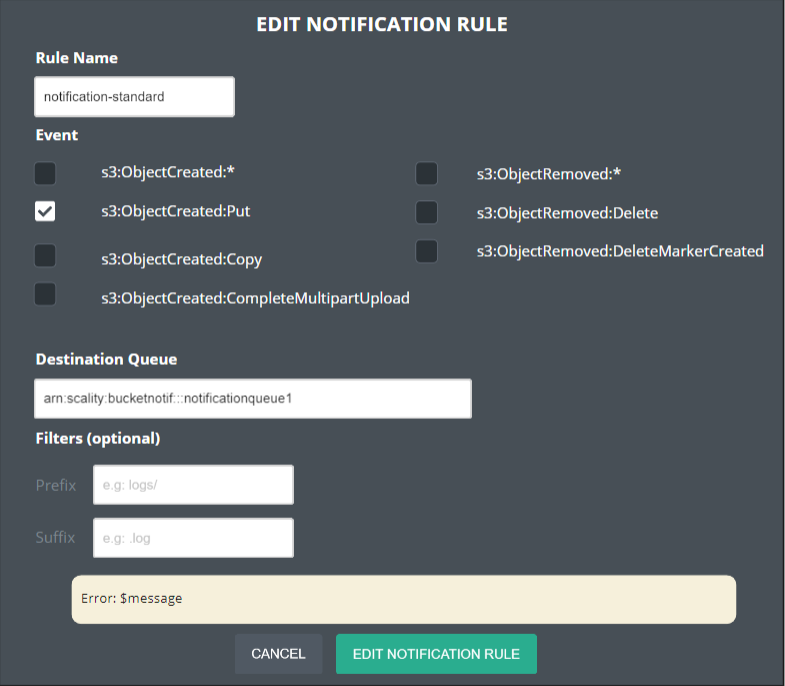

Bucket Notification
The bucket notification feature enables an external application to receive notifications when certain events happen in a bucket.
The API part of the feature will be built in line with the AWS specification while the notification delivery system will be specific to our solution, and will permit the delivery through a variety of mediums (e.g. RabbitMQ, Kafka, etc).
We plan to leverage the Backbeat component to perform the collection of events from the S3C Raft oplog (and later on from MongoDB oplog), the queuing and the delivery of events.
The feature has to be implemented mainly for S3C and eventually be implemented for Zenko and Blobserver.
Requirements
Use-cases Description
API
The PutBucketNotificationConfiguration API will store the bucket
configuration in a post-processed way (XML converted to JSON) into the
metastore special database.
The structure of a BucketNotificationConfiguration payload looks like the one defined in the AWS spec but is slightly different:
In the AWS spec it is possible to specify:
- TopicConfiguration: for notifying an event (SNS)
- QueueConfiguration: for queueing an event (SQS)
- CloudFunctionConfiguration: for executing a cloud function (Lambda)
We plan to only support QueueConfiguration for now. For each
QueueConfiguration there are 4 types of items:
Id: a unique user defined ID or automatically generated.Event: the type of event.- Optional
Filter: define specific sub-filter rules for objects such asprefixandsuffix. If not defined it will generate an event for all objects. QueueArn: the ARN of the target (see thereafter).
Example of a notification configuration (for a given bucket):
<NotificationConfiguration>
<QueueConfiguration>
<Id>MyFilterSet1</Id>
<Event>s3:ObjectCreated:*</Event>
<QueueArn>arn:scality:bucketnotif:::target1</QueueArn>
</QueueConfiguration>
<QueueConfiguration>
<Id>MyFilterSet2</Id>
<Event>s3:ObjectCreated:*</Event>
<Filter>
<S3Key>
<FilterRule>
<Name>prefix</Name>
<Value>images</Value>
</FilterRule>
<FilterRule>
<Name>suffix</Name>
<Value>.jpg</Value>
</FilterRule>
</S3Key>
</Filter>
<QueueArn>arn:scality:bucketnotif:::target2</QueueArn>
</QueueConfiguration>
</NotificationConfiguration>
Event types that will need to support:
| Event | Description |
|---|---|
s3:ObjectCreated:*, s3:ObjectCreated:Put, s3:ObjectCreated:Copy, s3:ObjectCreated:CompleteMultipartUpload |
Will generate an event respectively every time an object is created (whatever the operation type), written, copied, MPU constituted. |
s3:ObjectRemoved:*, s3:ObjectRemoved:Delete, s3:ObjectRemoved:DeleteMarkerCreated |
Will generate an event respectively every time an object is deleted (whatever the operation type), deleted, or a delete marker is created. |
Event types that will need to support eventually (in future releases):
| Event | Description |
|---|---|
s3:ObjectCreated:Post |
Will generate an event every time an object is created. |
s3:ObjectRestore:Post, s3:ObjectRestore:Completed |
Will generate an event when an object will be restored from an archival storage (e.g. tape, or Glacier) |
s3:Replication:OperationFailedReplication, s3:Replication:OperationMissedThreshold, s3:Replication:OperationReplicatedAfterThreshold, s3:Replication:OperationNotTracked |
Specific replication related events. |
Since it will be exhausting to redefine the entire SQS API, we define
our own ARN format for the targets (QueueArn) that will map directly
to static config:
arn:partition:service:region:account-id:resource
With the following ARN mapping:
partitionbeing hardcodedscality.servicebeing harcodedbucketnotif.regionbeing ignored.account-idbeing ignored.resourcebeing the name of the static target name (see below).
In S3C the targets will be specified directly in the group_vars/all as YAML definitions, e.g.:
env_bucket_notifications:
- resource: target1
type: rabbitmq
host: <somehost>
port: <someport>
auth:
- user: <user>
password: <password>
- resource: target2
type: kafka
host: <somehost>
port:
auth:
- cert: certificate path
For the first version of the service we store the secrets in the configuration.
In Zenko the targets will be defined in ConfigMaps and Secrets.
Both Cloudserver and Backbeat need to be aware of the targets configurations.
Technical Details
Cloudserver Changes
In the PutBucketNotificationConfiguration API, Cloudserver must
check that the ARN points to a valid target.
Arsenal needs to be modified to store the operation that generated the
event in the ObjectMD structure. For this a new field originOp will
be added in ObjectMD. E.g. it may be structured like this: originOp:
copy, originOp: delete. We so far stick to the AWS event name
specification as it is broad enough (we may later extend it for more
granularity).
Backbeat Changes
A specific database oplog consumer (here Metadata oplog, but later
MongoDB oplog) will filter out the metadata operations according to
the filters defined in the bucket configuration, interpret the
originOp field and queue the operations in a specific Backbeat topic
bucket-notification.
The bucket notification queue populator will live in its own pod. We plan to use the LogReader class in Backbeat to build the bucket notification S3C oplog reader. We plan to leverage this class since it already abstracts the different oplogs mechanisms in a unified interface. There could be slight changes into the LogReader class as it used to be meant for the QueuePopulationExtension mechanism that we are going to deprecate.
+---------+
|Metadata/|
|MongoDB | +-----------+
+------+--+ |Replication|
| oplog |Processor |
| +----+------+
| +---+pod+-------+ | +-+pod+------+ +-----------------+
+------>+Bucket notif | +--v---+ |Bucket notif| |external endpoint|
|queue populator+-->+Topic +<---+Processor +--->+Kafka, RabbitMQ |
+------+--------+ +------+ +----+-------+ +-----------------+
| filter | refilter
| |
| +---------- |
+---------->Zookeeper+<-------+
target +---------+ read
config config
Note that in order to support s3:replication related events we will
need to have the replication processor directly writing events in the
Bucket Notification Topic.
Having each service (Replication, Ingestion, Bucket notification, Workflow engine, etc) in its own pod allows better separation of concerns in term of: configuring, scaling, restarting the services.
Dynamic Filters Configuration
The Bucket notification queue populator will get the current
FilterRules directly from the metastore related oplog events,
indiscriminately for the initial discovery and for the dynamic changes
(FilterRules added or removed).
Note: For S3C listening to all the metastore oplog events is
scalable because it has its own raft session and we don't expect to
have too many entries. In the case of Zenko, we may have to do an
initial discovery directly into the metastore bucket, and then the
oplog is rotated so we expect it to be relativelty fast to process.
For each NotificationConfiguration detected we will update a specific
Zookeeper entry in the path
/com/scality/backbeat/bucket-notification.
E.g. /com/scality/backbeat/bucket-notification/<BucketName>/MyFilterSet1
where BucketName is the name of the bucket, MyFilterSet is the
unique id defined in the QueueConfiguration. The file will contain
all the filter rules and the target in JSON format.
Bucket Notification Queue Populator: Event Processing
Each time the Bucket notification queue populator will match an event in the oplog according to the active set of filters, it will create an entry in the Bucket Notification topic. For sake of disk space we only have one global topic for the service, will only record the bucket name, object name and type of event (and strip out the metadata of the object).
The bucket notification processor will have to do a refilter (see next section) to avoid tagging the entries. This also have the advantage of having the processor reflecting immediately the dynamic configuration changes and not having a "lag".
Notes for buckets formats and versioning: For versioned buckets we need to ignore the master since there are always 2 updates in a batch. We also need to properly manage buckets where versioned has been disabled. We also need to manage the new bucket format, by potentially skipping the prefix.
Bucket Notification Processor: Actions
The bucket notification processor will adapt dynamically to bucket notification configuration changes (added / deleted filter rules) by setting a watcher on the bucket notification Zookeeper path.
Each target will have its own processor on the topic, consume at its own pace, skip entries which do not match and produce in its external endpoint. Parallelism will be achieved by having consumer groups.
Note: When delivering events to the external Kafka for instance, we need to be aware that the acknowledgment arrives in the delivery report event and not in the callback of the message. To manage this problem we can leverage the OffsetLedger class as it has been used in the replication mechanism. Retries can be done in memory and persistence is done when acknowledging offsets in the commit. Note that a message can be delivered more than once but this is not a problem since the goal is to deliver the message at least once.
Pause & Resume
TBD
Monitoring & Metrics
TBD
UI
The S3 Browser UI needs to be adapted to this new feature, and should target the following user story:
As a Data Consumer, I want to configure a set of rules to publish notification messages in my queuing systems when activity occurs on a bucket so that I can monitor data-changes within that particular buckets.
The main change will occurs in the View Bucket Info Modal. Three tabs will be added:
- Overview will provide a summary of the bucket configuration.
- Object Lock will provide the ability to configure Object Lock feature.
- Notification will provide the ability to configure Bucket Notification feature.
Overview Tab

Acceptance Criteria: * The overview tab shall contain the old Overview section, and the Permissions section. * The old Overview section name shall be replaced by Properties.
Object Lock Tab

Acceptance Criteria: * The Notification tab shall contain the old Object Lock Default Settings section. * The old Object Lock Default Settings section name shall be replaced by Default Settings.
Notification Tab

Acceptance criteria: * The bucket notification configuration must be retrieved and displayed according to the GetBucketNotificationConfiguration action. * Clicking ADD NOTIFICATION button opens add notification modal. * Clicking Edit button opens edit notification modal. * Clicking DELETE button shall delete all selected rules from the bucket notification using PutBucketNotificationConfiguration action.
Add and Edit Notification Modal


Acceptance criteria:
* Pressing the tab key must switch the focus between fields.
* If s3:ObjectCreated:* event is selected, then s3:ObjectCreated:Put,
s3:ObjectCreated:Post, s3:ObjectCreated:Copy, and
s3:ObjectCreated:CompleteMultipartUpload events can't be checked.
* If s3:ObjectRemoved:* event is selected, then s3:ObjectRemoved:Delete,
and s3:ObjectRemoved:DeleteMarkerCreated events can't be checked.
* Clicking ADD NOTIFICATION RULE and EDIT NOTIFICATION RULE shall
update the bucket notification configuration according to inputs using PutBucketNotificationConfiguration action.
Alternatives
We could have leveraged tabs on the main pages to avoid modal, and provide a better UX. But, the development cost of that change is not compatible with our deadlines, and the S3 Browser will be replaced by XDM UI offline in 2021.
List of Improvements
- Suggest the ARNs during the bucket notification configuration.
- Provide the ability to create the destination queues.
Alternatives
We could have leveraged the QueuePopulatorExtension mechanism but we decided not to. This mechanism relies on the idea that having multiple extensions querying the same oplog will overload the source metadata engine (as this kind of problems appeared especially on S3C repds).
+---------+ +---pod--------+
|Metadata/|oplog|QueuePopulator|
|MongoDB +---->+ |
+---------+ +--------------+ +------------+ +---pod------+
|QueuePopulator| |Replication | |Replication | replication
|Extension 1 +---->Topic <-------+Processor +------------->
|Replication | |(w/ attr) | |(Consumer) |
+--------------+ +------------+ +------------+
|Workflow |
|Engine Queue | +------------+ +---pod----+
|Populator +--->+Workflow | |Workflow | actions
+----------+---+ |(uuid) <-------+engine +------------>
^ |(w/ attr or | |processor |
| |w/o attr) | +-+--------+
| +------------+ |
| |
| set filter descriptors (ZK) |
+-------------------------------+
But those load issues have been fixed on S3C so far. The oplog management have been correctly abstracted in a class in Backbeat so we think it is better to benefit from a clean separation of concerns.
We think that the concept of QueuePopulatorExtension leads to more complex designs (for the workflow engine we had to invent a complex way to reconfigure the filters without restarting the replication queue populator).
We also noticed that the ingestion mechanism lives in its own pod but still uses the queuePopulatorExtension mechanism by itself, leading to a code which is unnecessarily complex. So later on we plan to simplify this code. Same for the Workflow engine queue populator that could also live in its pod in using the LogReader classes directly. We also plan to remove the QueuePopulatorExtension from the code.